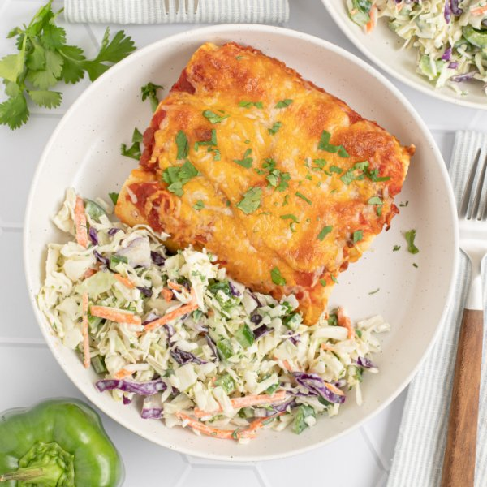

Creamy Chicken Enchiladas with Bell Pepper, Cilantro & Ranch Slaw

Total Time
35 min
Nutrition (Per Serving)
703.5 kcalCalories
57.4 gProtein
59.2 gCarbs
28.3 gFat
Full nutrition table
| Calories | 703.5 kcal |
| Total fat | 28.3 g |
| Saturated fat | 8.7 g |
| Trans fat | 0 g |
| Cholesterol | 182.5 mg |
| Sodium | 2334.3 mg |
| Carbohydrates | 59.2 g |
| Fiber | 12.2 g |
| Sugars | 9.2 g |
| Protein | 57.4 g |
| Potassium | 1460.8 mg |
| Calcium | 433.5 mg |
| Iron | 4.3 mg |
| Vitamin A | 589.9 IU |
| Vitamin C | 89.6 mg |
| Vitamin D | 0.2 IU |
Cookware
Ingredients
- 1 small bunchcilantro
- 2green bell peppers
- 1 cupplain Greek yogurt
- ¼ cupranch dressing
- 1 (30 oz) whole chickenrotisserie chicken, white and dark meat
- 320 mlsalsa
- 1 (14 oz) bagshredded cabbage (coleslaw mix)
- 1 cupshredded cheese, Mexican blend
- 12small corn tortillas
- 45 mltaco seasoning
- extra virgin olive oil
- salt
Steps
- Preheat oven to 450°F. Coat the bottom of a large baking dish with a thin layer of oil and set aside.2 tsp extra virgin olive oil
- Place chicken on a cutting board and, using your hands, remove meat from the skin and bones. Separate the meat into shred-like pieces and place in a medium bowl.1 (30 oz) whole chicken rotisserie chicken, white and dark meat
- Add yogurt, taco seasoning, and salt to the bowl with the shredded chicken. Stir to combine the filling.1 cup plain Greek yogurt
3 tbsp taco seasoning
½ tsp salt - Working in batches if necessary, place tortillas on a flat surface and divide the filling between them. Wrap tortillas around the filling and place, seam-side down, in the baking dish. Top with salsa and cheese.12 small corn tortillas
1 ⅓ cup salsa
1 cup shredded cheese, Mexican blend - Place baking dish in the oven (it doesn't have to be fully heated) and bake until cheese is melted and filling is warmed through, 15-20 minutes. Remove from oven.
- Meanwhile, wash and dry cilantro. Using a clean cutting board, shave cilantro leaves off the stems; discard stems and mince the leaves. Place half in a clean medium bowl. (Set remaining cilantro aside for serving.)1 small bunch cilantro
- Wash, dry, trim, and seed bell peppers; small dice. Add to the bowl with the cilantro.2 green bell peppers
- Add shredded cabbage, dressing, and salt to the bowl. Stir to combine the slaw and set aside.1 (14 oz) bag shredded cabbage (coleslaw mix)
¼ cup ranch dressing
¼ tsp salt - To serve, divide enchiladas and slaw between plates; sprinkle with reserved cilantro. Enjoy!